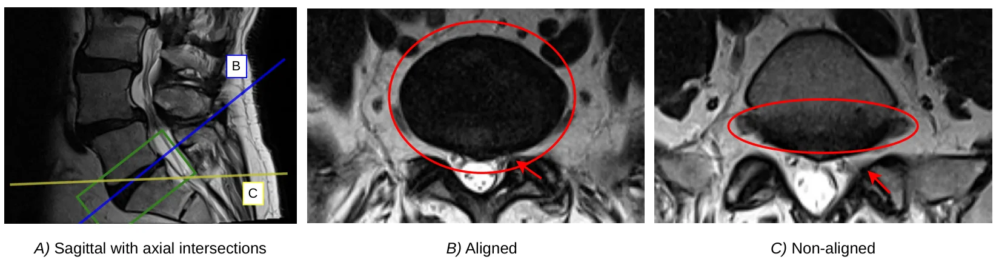
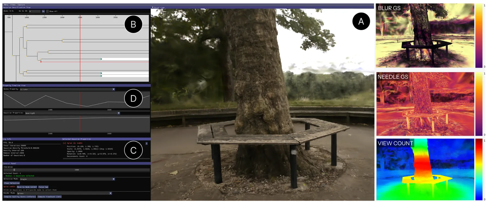
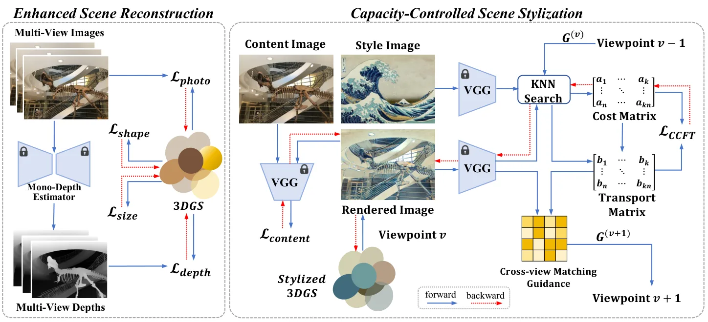
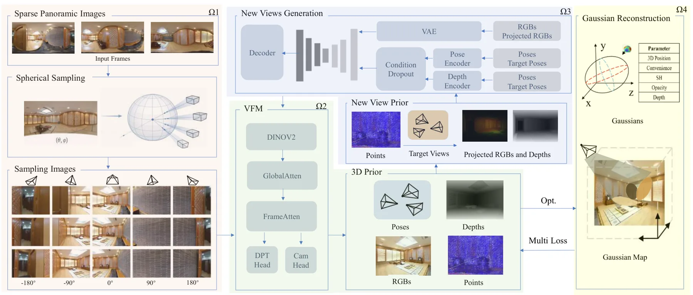
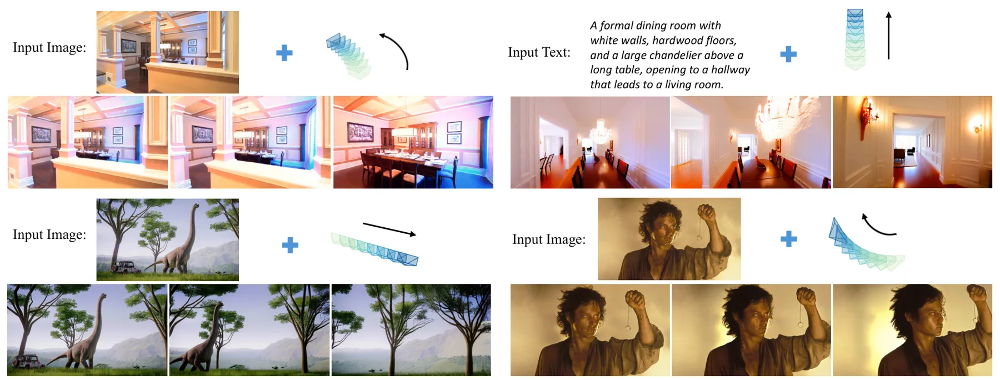

新论文 · 日期 2026-06-25 · score 13 · eess.IV, cs.CV, eess.SP
作者：Robin Y. Park, Mark C. Eid, Rhydian Windsor, Amir Jamaludin
评分 6.5/10
医学 3DGS体重建稀疏采样新视角重采样
一句话工作总结：把 3DGS 用于稀疏各向异性 MRI 的体重建和任意解剖平面重采样，以提升脊柱狭窄分级表现。
本文目标是改进脊柱 MRI 上的放射学分级：原始稀疏各向异性扫描平面往往没有与目标解剖结构对齐，导致局部狭窄等病变不能完整落在平面内。作者将 3D Gaussian Splatting 改造成一种体重建表示，从稀疏 MRI 生成可按目标解剖方向采样的新视角/新平面图像，再用这些重采样图像预测局部狭窄严重程度等级。与基于反距离加权最近邻强度平均的体素插值重采样相比，Gaussian Splatting 重采样在多个狭…
The objective of this paper is to improve radiological gradings measured on MRIs of spines, by resampling scans so that the new view planes are better aligned with the target anatomy than the original sparse i…
新论文 · 日期 2026-06-26 · score 10 · cs.CV
作者：Jiyong Kim, Shuang Song, Ronjgun Qin
评分 8.2/10
卫星三维重建3DGS生成式细化几何一致性
一句话工作总结：在卫星 3DGS 中用深度监督、多尺度几何细化和阴影引导生成式 refinement 提升外观质量，同时抑制几何幻觉。
卫星影像 3DGS 常因视角主要来自顶部而缺少建筑立面监督，导致表面洞、外观低保真和几何退化。SatSplatDiff 延续作者先前 SatSplat 中的摄影测量 DSM 初始化与基于 2DGS 的阴影投射，并进一步加入单目深度监督和多尺度几何细化，以获得更稳定的表面表示。随后，方法进行 shadow-guided generative refinement：用几何计算得到的阴影图约束生成式细化目标，让扩散/生成…
Gaussian Splatting has been recently explored for satellite 3D reconstruction, demonstrating flexibility and efficiency in representing radiometrically diverse satellite scenes. However, the limited top viewpo…

新论文 · 日期 2026-06-25 · score 10 · cs.GR
作者：Kai-Yuan Lin, Aryabima Mandala Putra, Jui-Chi Lee, Shih-Hsuan Hung
评分 7.6/10
3DGS 调试可视分析View Coveragedensification
一句话工作总结：把 3DGS 渲染伪影追溯到具体 Gaussian 属性、视角覆盖和 densification 训练事件，服务重建质量诊断。
3DGS 训练速度快、渲染实时，但优化过程和伪影来源往往难以解释。现有 viewer 多展示最终场景，较少把可见伪影与 Gaussian primitive 属性、训练过程和 densification/pruning 历史连接起来。Vis4GS 在原始 3DGS viewer 与训练框架上扩展了四个联动视图：交互式 Gaussian 分析视图、属性时间线视图、Gaussian densification tree…
3D Gaussian Splatting (3DGS) supports fast training and real-time rendering, but its optimization process remains difficult to interpret. Existing viewers mainly expose the final reconstructed scene and offer…

新论文 · 日期 2026-06-25 · score 10 · cs.CV
作者：Zhihao Wen, Yixin Yang, Bojian Wu, Yang Zhou
评分 6/10
3DGS 风格化最优传输跨视角一致性几何正则
一句话工作总结：用带列容量约束的最优传输和跨视角匹配指导，提升 3DGS 风格化的稳定性与多视角一致性。
3DGS 适合高效新视角合成，但多视角风格化时常出现跨视角风格不一致、局部风格分配不稳定和 many-to-one feature reuse。本文把局部风格匹配重新表述为半平衡最优传输问题，并引入可调强度的显式列容量约束，以控制风格特征分配、提升覆盖和多样性。方法还加入跨视角匹配指导，约束场景内容与风格模式在不同视角中的对应关系，并为 vanilla 3DGS 设计多个几何正则，使 Gaussian primit…
While 3D Gaussian Splatting (3DGS) provides an efficient and explicit representation for novel view synthesis, enforcing stylistic coherence across viewpoints remains challenging. Existing 3D stylization metho…

新论文 · 日期 2026-06-25 · score 9 · cs.CV
作者：Zhisong Xu, Takeshi Oishi
评分 8/10
全景重建SfM-free弱视差3DGS
一句话工作总结：针对弱视差稀疏全景导致 SfM/SLAM 初始化失败的问题，用几何条件补视角和 depth-guided 3DGS 实现 SfM-free 重建。
稀疏全景图像具备大视场覆盖，但当相机运动以旋转为主、平移视差弱时，传统 SfM/SLAM 初始化常病态且不可靠。PanoImager 提出一个 SfM-free 框架：先把少量全景图分解为局部透视视图，再利用前馈位姿/深度先验、几何条件扩散视图补全和 depth-guided 3DGS 优化来丰富稀疏观测并稳定跨视角一致性。论文在多个 benchmark 上显示极端稀疏输入下的稳定性提升，并将该方法定位为 SfM/…
Panoramic sensing offers wide field-of-view coverage, yet 3D reconstruction from sparse panoramas remains challenging under rotation-dominant, weak-parallax motion. In such regimes, SfM/SLAM initialization is…

新论文 · 日期 2026-06-26 · score 4 · cs.CV
作者：Minghao Yin, Jiahao Lu, Wenbo Hu, Wang Zhao
评分 6.2/10
3D-aware 视频生成Plücker ray相机控制SfM/SLAM 尺度
一句话工作总结：把相机射线的 6D Plücker 坐标注入视频 DiT attention，使生成模型显式感知射线几何和相机尺度差异。
现代视频扩散 Transformer 通常用 RoPE 在图像坐标和时间轴上放置 token，但这些坐标不包含场景三维结构。RayPE 观察到两条相机射线的几何关系可由 Plücker reciprocal product 描述，其双线性形式与 Transformer attention 中的点积相似。方法将每个 token 的 6D Plücker 坐标加性注入 self-attention 的 query/ke…
Modern video diffusion transformers position their tokens through RoPE on the (u,v,t) axes -- a description of the camera's sampling grid that says nothing about the 3D structure of the scene. We observe that…